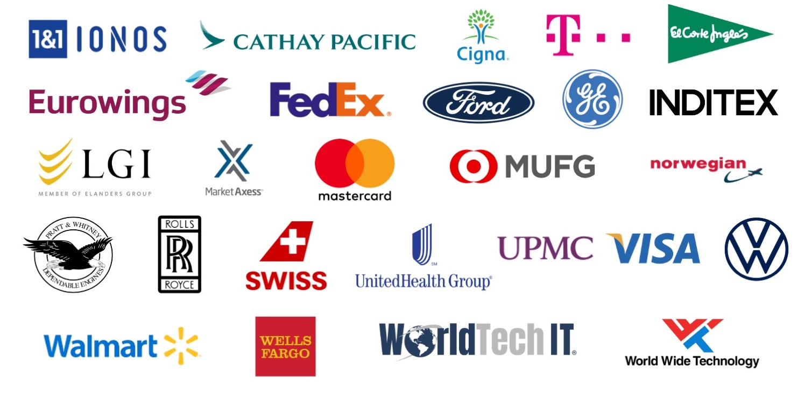

I’ve had the privilege of working with amazing customers to deliver exceptional products and create impactful customer experiences. Below are some of the customer programs I have led.
At F5, I led the Early Access (EA) and Limited Availability (LA) programs for BIG-IP Next, a next-generation solution redefining application delivery.
Duration: October 2021 - April 2022
Role: Product Engineer & Program Lead
As a Product Management Engineer, my focus was on transforming technical insights into impactful customer solutions. I led Early Access and Limited Availability programs, fostering collaboration between teams and customers to refine F5’s BIG-IP Next product and prepare it for market launch.
The goal was to gather feedback, align stakeholders, and ensure the product addressed real-world customer needs, while enabling smooth adoption through tailored demonstrations and use-case development.
In running this program, I worked with 19 partners and customers, including Walmart, Volkswagen, Ford, MasterCard, and Wells Fargo.
Depending on the customer enviornment, I helped onboard them into the program through the supported software needed for their enviornment, whether that was Virtual Edition (VE) or Hardware.
BIG-IP Next: The next-generation BIG-IP product I helped shape and bring to market in running this program. Learn More about BIG-IP Next.
It also could not have been possible without collaboration from all our product managers, engineering directors, senior leadership, and customer account teams.
Role: Intern and Customer Program Lead
Duration: November 2018 - June 2019
This was my core internship project at Lufthansa Technik, focused on improving the process by which customers could view their engine repairs. Aircraft engines consist of hundreds, sometimes thousands, of parts—ranging from small screws to large components. Previously, the company managed this complex process using an Excel spreadsheet with individual line items for each part.
In running this program, I worked with over 20 partners and customers to onboard them into the new engine teardown system, including Rolls Royce, Lufthansa, Eurowings, and Pratt & Whitney.
This project transformed the engine teardown repair tracking process at Lufthansa Technik, showcasing my ability to tackle complex challenges and deliver customer-focused solutions that improve operational efficiency.
To learn more about the technical background, view the technical details on another part of my portfolio site here.
Through these programs, I had the ability to work with several customers. Here are some of those I've worked with:
